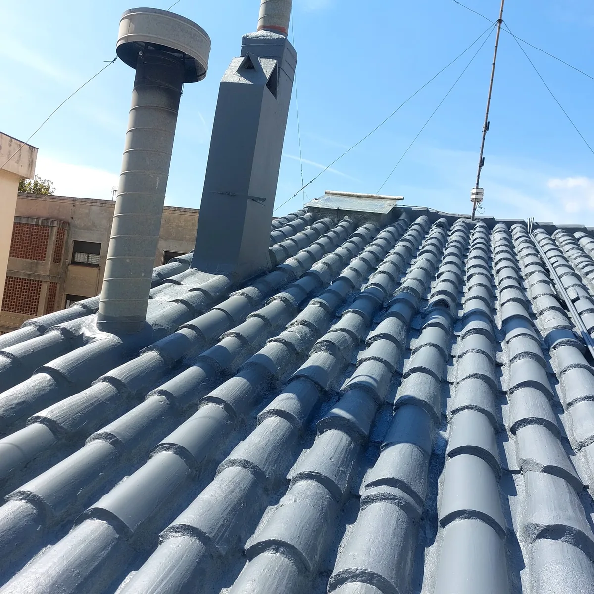

Reparación e impermeabilización de cubierta y chimeneas
Trabajo sobre una cubierta de teja con zonas deterioradas en encuentros y alrededor de elementos salientes. La serie muestra el estado previo, la reparación de los puntos afectados y el acabado final.
Ver trabajo completo